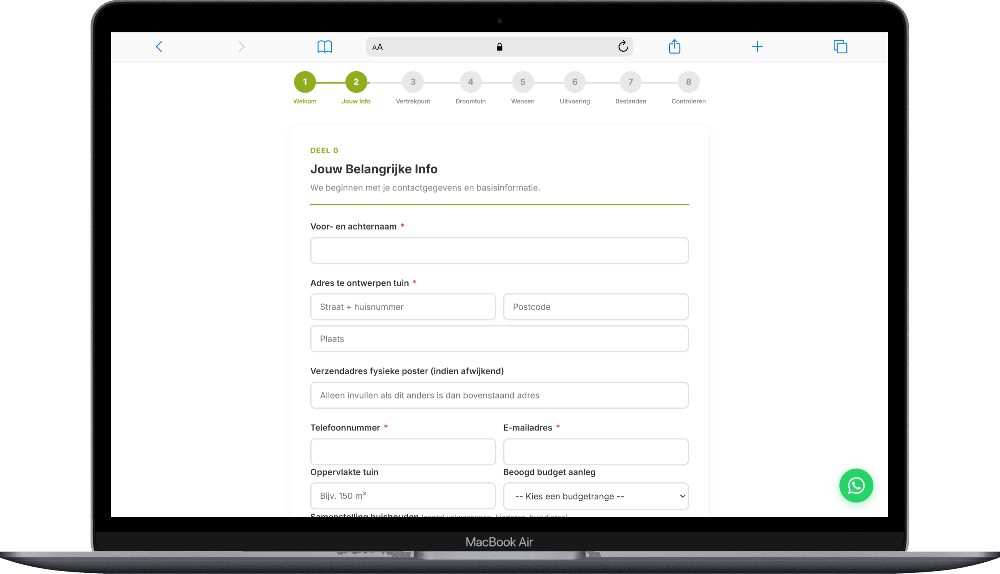
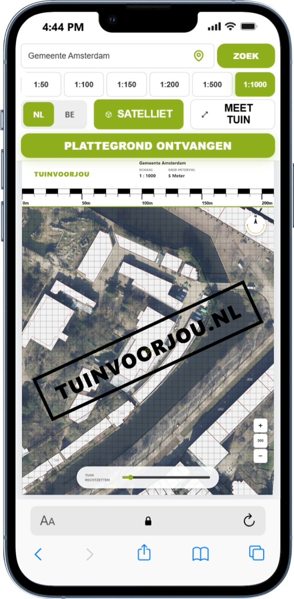
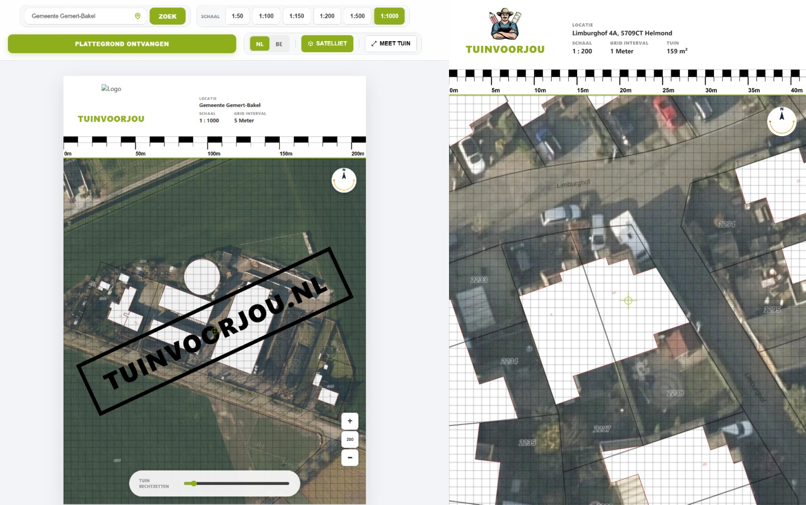
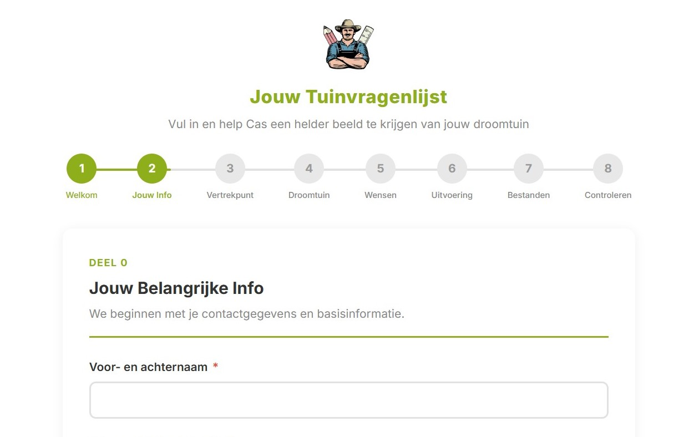
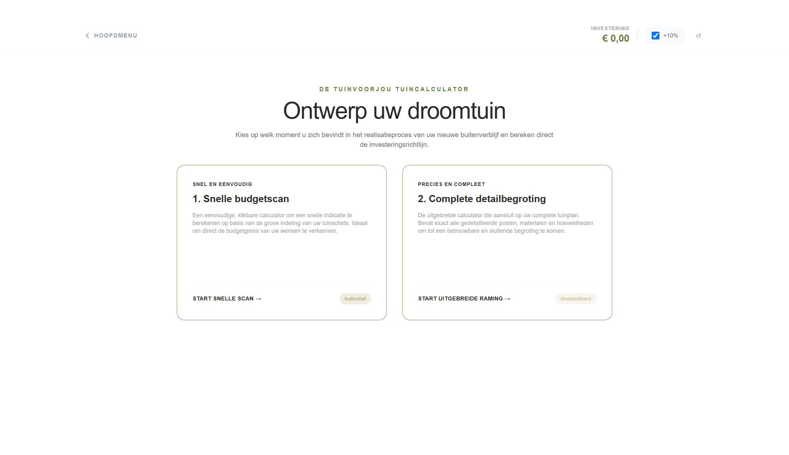
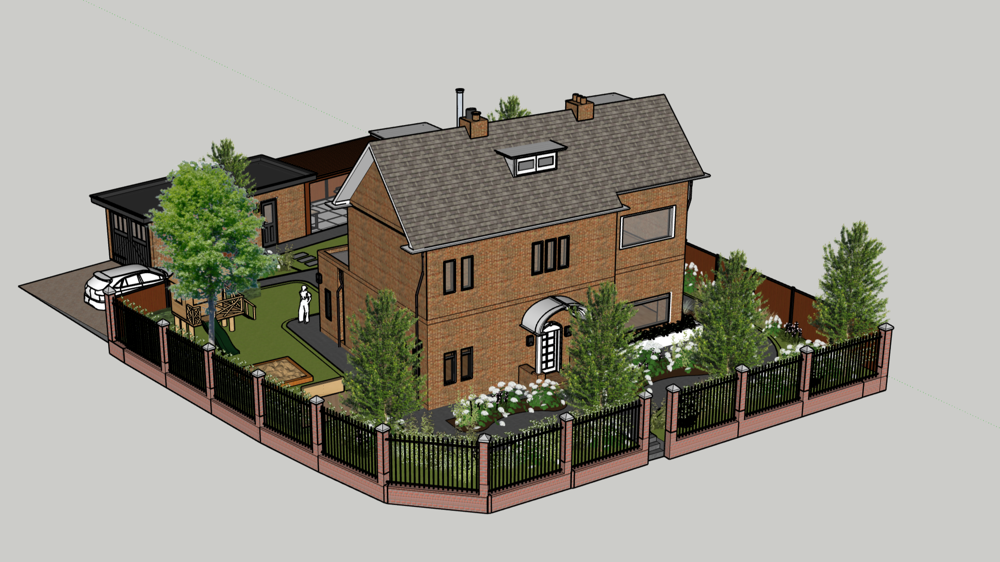

Animation showing what I build: websites, automations and web tools.
High-end custom websites, web tools, automations and more.
I build websites, web tools and automations that make running your business easier. Build a new site, upgrade an old one, or take the repetitive work off your hands. Tell me what you need and I'll come back with a clear plan and the price before I start.
Most of my work is websites for small businesses: fast, easy to find, and easy to contact or book through. Around them I build handy tools and automations that save you the boring clicks.
Tools built for the way you work.
Beyond websites, I build custom web tools and automations shaped around your business: think of a floor plan generator or an online questionnaire. They attract new customers and make life easier for you and your customers.
You know the price before I start
Reply within 24 hours
Explained in plain language
One person from first call to finished product


Services
Websites
Every business works differently, so I start with yours. I take the time to understand you and your business, and to build a clear picture of who visits your site, what they come for and what they should do next. Then we go through it together, so we both get a solid idea of what you are looking for. I come back with a clear plan, the price and a timeline, so you know exactly what you get before I start.
What's important to know is that I personally take full control of the project: the frontend and backend of the site, the SEO, branding, design, user experience and everything else a website comes with, working closely with you and your vision. Once the site is live, I make sure it stays up-to-date and running. This way you can take one burden off your shoulders and focus on your business and your customers. I take full care of your website.
Web tools
What's important for any business is to stand out, so whether you are looking to get more leads, simplify a difficult process or just want to improve your customers' experience: I will help you build it. Web tools are extremely diverse, they could be anything: from a floor plan generator or an online questionnaire to a booking page or a calculator, I take the time to understand what you're after and how it could benefit you and your customers.
Once we have a clear vision of the tool you are looking to build, I take the full project on me. I will build the frontend, the backend and perform updates, working collaboratively with you so the project stays within your reach. I will also tell you when something wouldn't work, because a form with twenty fields is harder to fill in than one with five, and every field I leave out is work you do not have to do later. Once it is live I make sure it keeps working, leaving you with one less thing to worry about.
Automation
Automation is where I take the repetitive work off your hands. Whether that's annoying invoices, bookings, reports or accounting: I take the time to map out exactly how those steps go now and where the work passes from one program to the next. Then we go through it together so we can finally eliminate that one task you do not want to do.
I personally set up the whole chain, and I tell you beforehand what I would automate and what I would leave to you, because some things are simply better with a person behind them. I keep the setup simple, so you understand it and can fix small things yourself. Once it runs I make sure it keeps running. This way the manual work that takes you hours is done in mere minutes.
Other projects
Some projects simply do not fit in the three categories above. I also make 3D designs, internal tools, custom dashboards and software that does not exist yet. Describe what you need and I will tell you straight away whether I am able to build it.
You do not need to know what it is called or which technology fits it. Start with the problem: what is it that you or your customers cannot do right now? I will look at it, tell you what is possible, what it will cost and how long it will take.
A few of the things I have built, each one tagged with the kind of work it is. Some of them fit the categories above, some of them do not.
Website
Camperplaats Zsana
A clean, mobile-first landing page for a campsite on the Hungarian puszta, with the booking information and everything a visitor needs before arriving.

Web tool
Blueprint generator
A tool where visitors measure their own garden on a satellite map and get a printable plan, in minutes, without an appointment.

Web tool
Online questionnaire
A step-by-step questionnaire that gathers everything a garden project needs, so the designer starts with the facts instead of a blank page.

Automation
Garden calculator
A calculator that emails visitors their budget estimation, notifies the owner of each submission and logs it to FluentCRM, so leads collect themselves.

Other
3D design
I turn your idea into a life-size 3D model, from a quick model to a polished render, so you can see it before any costly commitments.
Other
Something else
A project that doesn't fit the other three boxes. Tell me what you need and I'll say whether I can build it. Project in image: Evacuation plan
Got something like this in mind?
Whatever you are planning, the work above is proof I can build it. Tell me what you need and I will tell you if it is a fit.
A site or tool is not a thing you build once and leave alone. After it goes live it still needs looking after, which is why I offer maintenance for all my projects.
Covered
Uptime monitoring
I check that your site is up and fast. If something breaks I hear about it and start on it before you have to ask.
Backups
A full copy of the site and its data, stored off-site. If something is deleted or goes wrong, we go back to the last good version instead of starting over.
Updates and security
The CMS, the plugins and the server get their updates, and I check the security side: logins, certificates, spam and the rest.
Small changes and fixes
A broken link, a typo, a small addition. I fix the little things without turning them into a project with a quote.
Guarantees
Work of the highest quality
Every project gets the same standard of care. My tools load fast, work on mobile and still work a year from now. If it is not right, it does not go live.
Complete transparency
You see the plan, the price and the progress while I build. If something changes, or if I am not sure about something, you hear it from me. You do not find out afterwards. If you find a problem in something I built, that is on me. I fix it and there is no fixing fee.
One person all the way through
You talk to me the whole way, from the first call to the handover. I plan it, I build it and I hand it over. There is nobody else in between, potentially saving you weeks of time.
Revision until it's right
Look at the first version and tell me what is wrong. I keep working on it until it is right. I see that back-and-forth as part of the job, not an extra charge.
Questions
Everything you need to know before we start.
How much does a project cost?
All my projects start with a fixed price. Depending on the project, I discuss it with you and come back with a clear and fair quote. I don't leave any surprises for last either: you will know the price before I start, and that will be the only price. What the project costs depends on what you need. A small web tool will cost far less than a full website, but all my prices are fair and discussed in advance.
How long does it take?
Most small web tools and automations take one to two weeks. A full website takes longer, because I take the time to understand your business first. Just like the price, you get the timeline before I start, so you know exactly what happens and when. Nothing begins until you are happy with both.
Do I need technical knowledge?
No, not at all. You don't need to understand code, hosting or servers; that side is mine. You get something you can actually use, and I walk you through it, so any small changes you can do yourself. And if you ever get stuck, you just ask me.
What if something breaks?
Tell me and I fix it. Everything I build is tested before it goes live, and small fixes are part of the maintenance plan instead of a new project with a new quote. If it is something I got wrong, that is on me, and there is no fixing fee.
Do you travel?
Yes, though most of what I build is done online, so where you are hardly matters. I am based in Kiskunhalas, Hungary, and I travel for kick-off meetings and handovers when the project needs it. Wherever you are, we can make it work.
What does maintenance cover?
Uptime monitoring, backups, updates and security, plus small changes and fixes. New features, redesigns and content sit outside the plan and are quoted separately, so there is never a hidden cost. It is optional and never required, but a site without updates slowly goes stale.